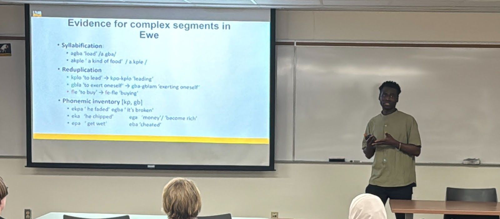
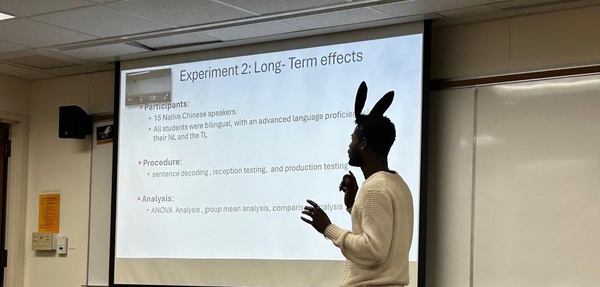
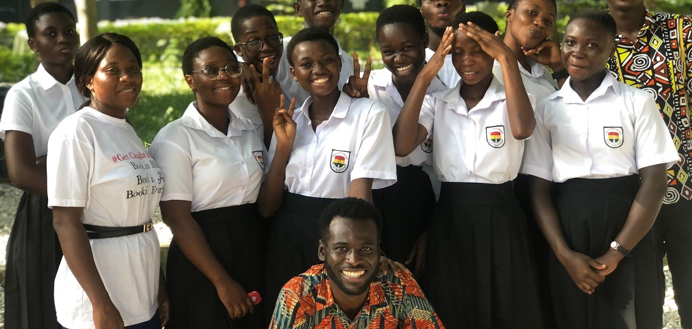

- Laboratory Phonology
- Psycholinguistics
- Second Language Linguistics
- Publications
- Works in Progress
- Conference Presentations
- Talks

Laboratory Phonology
My work in phonology aims to investigate the sound systems and their organization in languages. My current study focuses on understudied speech sounds, such as complex segments, including labiovelars [kp, gb], affricates, e.g., [ts, dz], and pre- and post-nasalized stops [mb, ŋɡ, dŋ] in Gbe, Kwa, Guan, and central Togo languages. My goal is to explore their physical, articulatory, abstract, and perceptual features and representations. I approach these through theoretical and experimental methods.

Psycholinguistics
In psycholinguistics, I envisage exploring the cognitive processes involved in language comprehension and production. I am particularly interested in the processing of sounds, phonological grammar, and word processing mechanisms in early bilinguals and multilinguals.

Second Language Linguistics
My research in this area mainly focuses on the intricacies of second language learners' language use. Specifically, I investigate their speech forms and the intersection between instructional methods, intelligibility, and Sociophentic competencies. My undergraduate and Mphil thesis explore more in this area.
Publications
- Gyasi, E.A, & Owusu, S. (2024). Strategies in oral English Instruction: a pedagogical study of some Ghanaian Senior High Schools. European Journal of English Language Teaching, 9(3). doi: 10.46827/ejel.v9i3.5528
Works in Progress
- Phonetic evidence for an ‘unordered’ representation of labiovelar stops: An experimental view on Ewe (with Anne Pycha)
- Phonetic basis for feature ordering of Ewe's affricates
- Consonant onset effects on vowel space: Insights from Gurune (with Joel Akolugu)
Conference Presentations
- Gyasi, E.A. (2026). Phonetic evidence for an ‘unordered’ representation of Labiovelar stops: An experimental view on Ewe. 31st Mid-Continental Phonetics and Phonology Conference (MidPhon31). Saint Louis University [Presented]
- Amissah, A & Gyasi, E.A. (2026). De-Serialization in Akan: 20th Workshop on General Linguistics (WiGL). University of Wisconsin, Maddison [Presented]
- Gyasi, E.A. (2025). On the Bilinguals’ Linguistic System(s): Asymmetries in Processing Demands of Phonotactic Constraints. Pacific Ancient and Modern Languages, 122 Annual Conference. San Francisco [Accepted]
- Gyasi, E.A. (2025) Beyond the Products: A Sociolinguistic Study Of Visual Semiotic Features Of Alcoholic Beverage Advertisements, Evidence From Two Ghanaian Brands. The 17th Annual Illinois Language and Linguistics Conference / 6th Annual Sociolinguistics Symposium. University of Illinois, Urbana Champaign [Presented]
- Gyasi, E.A. (2023). Strategies in Oral English Instruction: A Pedagogical Study. International Conference for Post-Graduate Students, University of Education, Winneba. [Presented]
- Gyasi, E.A. (2022). Pronominals and Reflexives in Awutu: A syntactic study. Linguistic Association of Ghana Conference. KNUST [Accepted]
- Gyasi, E. A (2021) Gender Roles on Vowel Quality: A spectrographic Study. Faculty Seminar Series, Department of Applied Linguistics. University of Education, Winneba. [Presented]
Talks
- November 2025 — On the Bilinguals Linguistic System(s): Asymmetries in processing Demands of Phonotactic Constraints. Phonetics and phonology (P-Group) Reading group, UWM
- April 2025 — Acoustic cues guide phonological representation of complex segments: Evidence from Ewe’s [kp, gb]. The Five-Minute Talk, Department of Linguistics. University of Wisconsin, Milwaukee